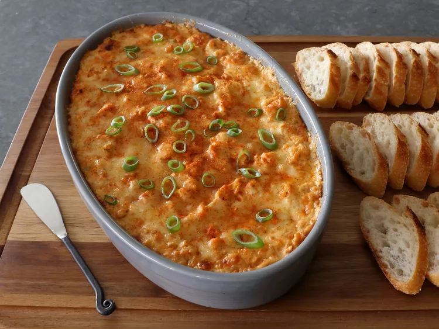

Olive Puffs

Description
This is THE best hot crab dip. I'm going to show you how to make what I consider the king of the hot dips, which begins, like most baked dips, with cream cheese, but the key ingredients I use really amplify that crabby flavor. Use the best lump crab you can find—but whether your budget has room for the finest fresh crab or just allows for canned crab, this easy baked dip will still be a hit at your party.
Ingredients
- 2 (8 ounce) packages cream cheese, at room temperature
- 1/3 cup sour cream
- 1/3 cup mayonnaise
- 1/4 cup ketchup
- 2 teaspoons Worcestershire sauce
- 2 cloves garlic, minced
- 1 lemon, zested and juiced
- 2 teaspoons seafood seasoning, such as Old Bay®
- 2 teaspoons paprika
- 1 teaspoon hot sauce
- 1 teaspoon freshly ground black pepper
- 1/4 teaspoon cayenne pepper, or more to taste
- 6 ounces shredded white Cheddar cheese, divided
- salt to taste
- 1/2 cup sliced green onions
- 1 pound lump crab meat
Steps
- Preheat the oven to 450 degrees F (230 degrees C).
- Stir cream cheese, sour cream, mayonnaise, ketchup, Worcestershire sauce, garlic, lemon zest and juice, seafood seasoning, paprika, hot sauce, freshly ground black pepper, cayenne, and 4 ounces shredded Cheddar cheese together in a bowl until well combined. Season with salt.
- Add green onions and crab meat to the bowl; fold in gently with a spatula until evenly mixed.
- Transfer into a baking dish or deep pie dish. Top with remaining 2 ounces shredded Cheddar and a shake of cayenne.
- Bake in the preheated oven until dip is piping hot, about 20 minutes. Let rest 10 minutes before serving.
- Serve with more green onions and sprinkle more cayenne on top if desired.